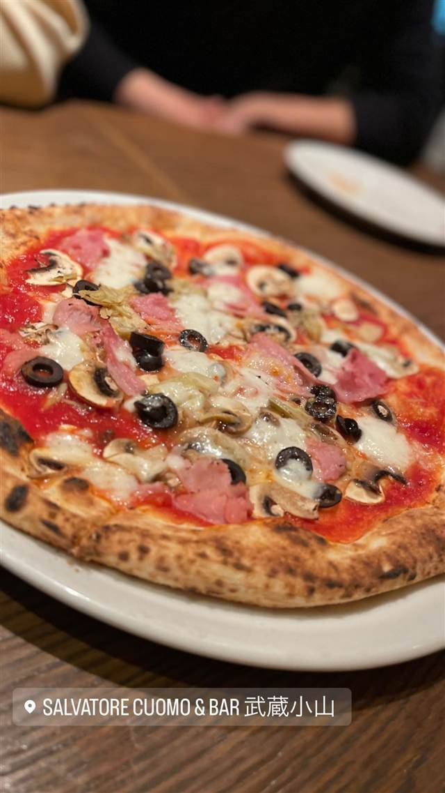
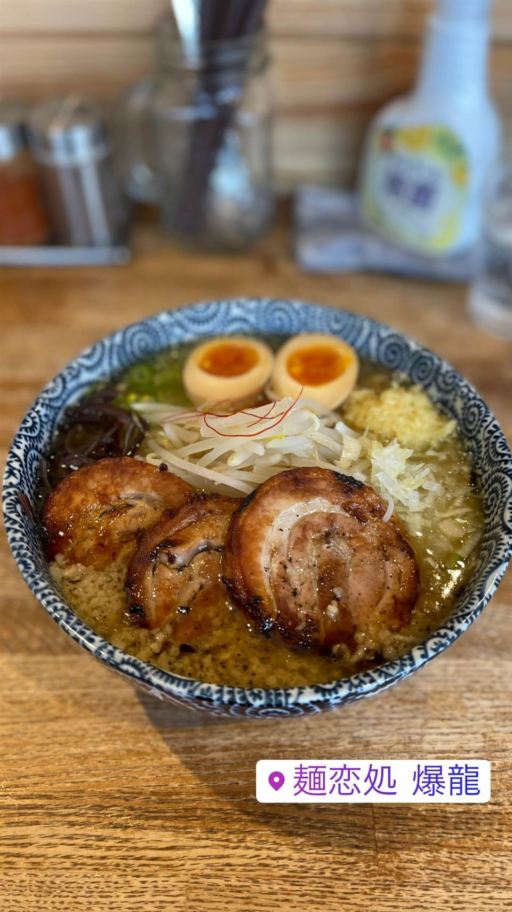
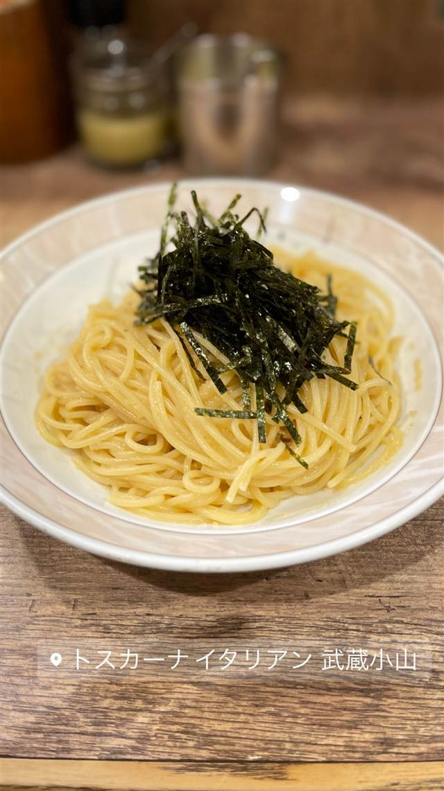
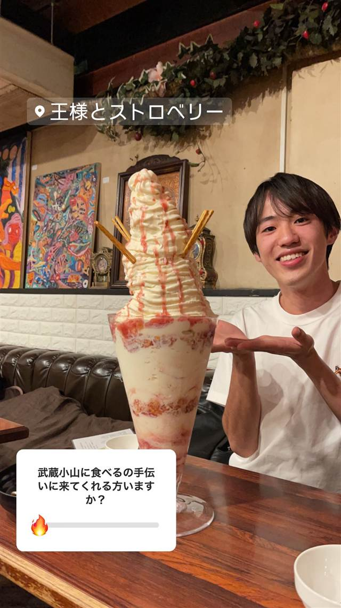
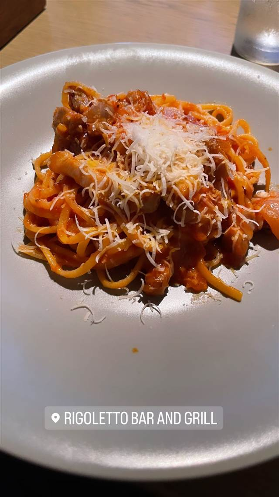

SALVATORE CUOMO & BAR 武蔵小山
イタリアから輸入した薪窯で焼く400℃高温焼成のナポリピッツァ
SALVATORE CUOMO & BAR 武蔵小山
ナポリ出身のサルヴァトーレ・クオモ氏が1995年に目黒川沿いで始めた本格ナポリピッツァ店を源流とするチェーンの一店舗。イタリアから輸入した薪窯で高温焼成する伝統製法を守り、日本にナポリピッツァを広めた先駆者としての系譜を持つ。
TRIVIA
豆知識
- 創業者は日本に本格的な薪窯ナポリピッツァを広めた先駆者とされる
- 国内外に展開する世界最大級規模のピッツァ職人（ピッツァイオーロ）集団を率いている
REVIEWS
世間の評判
3.08食べログ
ランチのコスパとピザの品質
- コスパの良いランチと本格的なピザの美味しさを評価する声が多い
- 改装後に明るく広くなった店内の雰囲気の良さを評価する声もある
- 通常のディナーメニューは値段がやや高めだと感じる人が多いという声もある
- 混雑している時間帯は料理の提供にかなり時間がかかるという指摘もある
食べログ 口コミ140件
| 系譜 | 創業者サルヴァトーレ・クオモ氏が1995年、目黒川沿いに「サルヴァトーレ」を開業し日本にナポリピッツァを広めた系譜のチェーン店の一つ |
|---|---|
| 看板 | ナポリピッツァ |
| こだわり | イタリアから輸入した薪窯で400℃の高温焼成。当時日本になかった本格薪窯を導入した |
| どこから | 23区の外れ・近郊 |
| 営業時間 | 月〜木 11:30-14:30、17:00-22:30 金 11:30-14:30、17:00-23:00 土 11:30-23:00 日 11:30-22:30 |
| 予算 | 昼 ¥1,000～¥1,999 夜 ¥3,000～¥3,999 |
| 場所 | 武蔵小山 東京都品川区小山3-6-15 パークホームズ武蔵小山1F |
| メモ | 武蔵小山駅から徒歩5分、テイクアウト・デリバリー対応 |
食べたもの：ピザ
OFFICIAL
店からの知らせ
その日の限定や臨時の休みは、店のInstagramに出ます。
NEARBY
近い店・同じ系統の店
-

★ まぜそば・油そば 武蔵小山駅 麺恋処 爆龍（はぜりゅう） 動物系に味噌を効かせた濃厚醤油の中華そば 昼 ¥1,000～¥1,999 夜 ¥1,000～¥1,999 -
 ピザ 武蔵小山
La TRIPLETTA
開業10カ月でビブグルマンを獲得した本格ナポリピッツァ
夜 ¥4,000～¥4,999
ピザ 武蔵小山
La TRIPLETTA
開業10カ月でビブグルマンを獲得した本格ナポリピッツァ
夜 ¥4,000～¥4,999
-

パスタ 武蔵小山 パスタ専門店 とすかーな 武蔵小山総本店 秘伝の醤油だれで仕上げる和風スパゲッティなど常時60種以上 昼 ¥1,000～¥1,999 夜 ¥1,000～¥1,999 -
 ケーキ・パフェ 武蔵小山
パティスリィ ドゥ・ボン・クーフゥ 武蔵小山本店
月替わりパルフェは完全予約制のイートイン限定で持ち帰りができない
昼 ¥3,000～¥3,999 夜 ¥4,000～¥4,999
ケーキ・パフェ 武蔵小山
パティスリィ ドゥ・ボン・クーフゥ 武蔵小山本店
月替わりパルフェは完全予約制のイートイン限定で持ち帰りができない
昼 ¥3,000～¥3,999 夜 ¥4,000～¥4,999
-

ケーキ・パフェ 武蔵小山 王様といちご（旧店名：王様とストロベリー） 高さ約60cm・重さ約3.5kgの巨大な王様パフェ 昼 ¥1,000～¥1,999 夜 ¥1,000～¥1,999 -

バー 六本木 RIGOLETTO BAR AND GRILL 名物バーガーはヒルズ主催コンテストで最多5回優勝の実力店 夜 ¥3,000～¥3,999
ONSEN & SAUNA